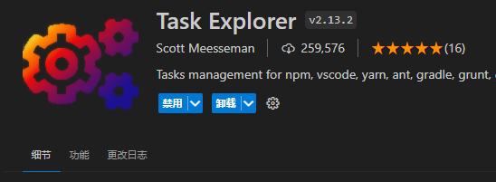
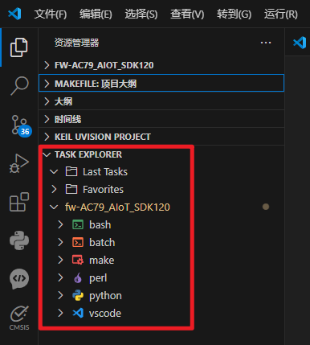
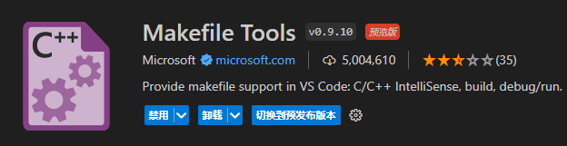

<!DOCTYPE lake>
<h2 data-lake-id="lTd2c" id="lTd2c"><span data-lake-id="ubd661ca7" id="ubd661ca7">VSCode配置</span></h2><h3 data-lake-id="zGBk0" id="zGBk0"><span data-lake-id="u7de27fae" id="u7de27fae">插件Task Explorer</span></h3><p data-lake-id="u50632a35" id="u50632a35"><span data-lake-id="ued327abf" id="ued327abf">Task Explorer</span></p><p data-lake-id="u83243273" id="u83243273"></p><p data-lake-id="u1a77f14e" id="u1a77f14e"><span data-lake-id="u8fc8a08d" id="u8fc8a08d">装了插件之后才能显示</span></p><p data-lake-id="ud8892431" id="ud8892431"></p><h3 data-lake-id="VXdPd" id="VXdPd"><span data-lake-id="u61e14f9b" id="u61e14f9b">插件Makefile Tools</span></h3><p data-lake-id="u22f61ee4" id="u22f61ee4"></p><p data-lake-id="ue327d8d2" id="ue327d8d2"><span data-lake-id="u8647dde2" id="u8647dde2">可以帮助Makefile产生代码高亮和代码提示</span></p><p data-lake-id="ud8a52a89" id="ud8a52a89"><span data-lake-id="ua780a639" id="ua780a639">​</span><br/></p><h2 data-lake-id="ueppM" id="ueppM"><span data-lake-id="ua7e642d0" id="ua7e642d0">Make</span></h2><p data-lake-id="ud8408572" id="ud8408572"><span data-lake-id="u4bc36612" id="u4bc36612">使用make命令时，要注意任务名要在Makefile里是存在的。</span></p><p data-lake-id="u96394059" id="u96394059"><span data-lake-id="u30233bfd" id="u30233bfd">例如如下编译命令是使用32个处理器核心编译</span><code data-lake-id="uee32986f" id="uee32986f"><span data-lake-id="u574931ed" id="u574931ed">ac791n_demo_demo_hello</span></code></p><span class="yuque-card-unsupported">[codeblock]</span><p data-lake-id="u5ad1d92a" id="u5ad1d92a"><span data-lake-id="u5af5c3ec" id="u5af5c3ec">这里的</span><code data-lake-id="ue37ee573" id="ue37ee573"><span data-lake-id="u51c48a57" id="u51c48a57">ac791n_demo_demo_hello</span></code><span data-lake-id="u4a7f001b" id="u4a7f001b">就是根目录Makefile里的如下配置：</span></p><span class="yuque-card-unsupported">[codeblock]</span><p data-lake-id="ue868b066" id="ue868b066"><span data-lake-id="u9fb69fc0" id="u9fb69fc0">​</span><br/></p>